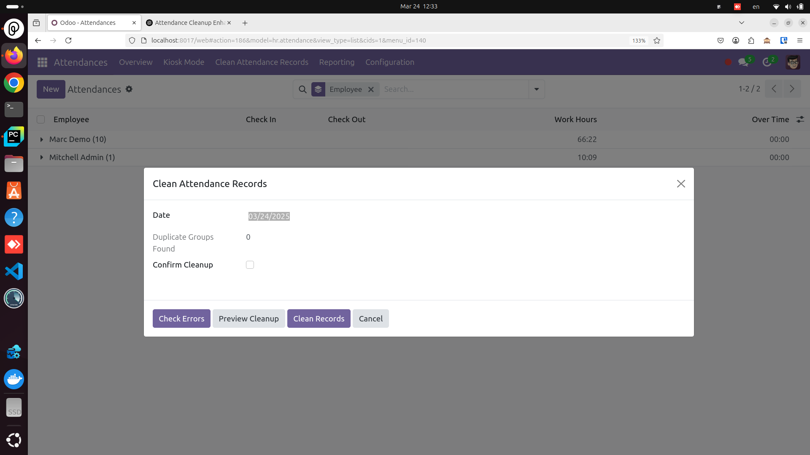
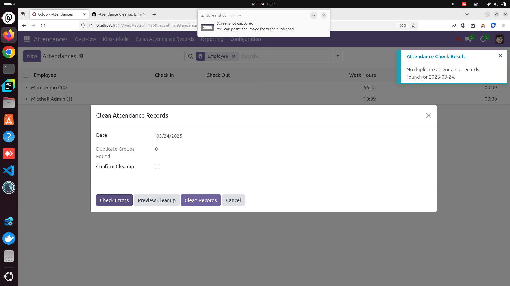
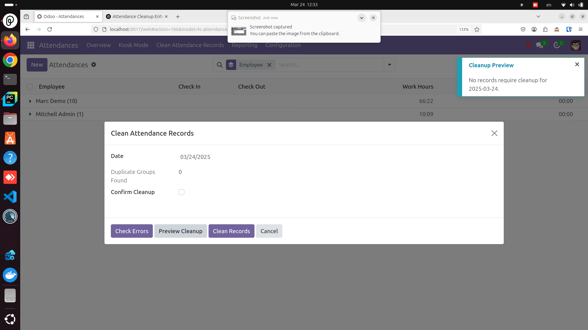

Attendance Adjustment
Version: 1.0
Price: 100 USD
Category: Human Resources
The Attendance Adjustment module helps HR teams maintain accurate attendance data by
identifying and cleaning up duplicate records. It provides an intuitive wizard to
check for errors, preview cleanup, and safely remove unnecessary duplicates.
Key Features
- Duplicate Detection: Quickly finds duplicate attendance records based on date and employee.
- Preview Before Cleanup: Shows a detailed summary of records to be removed or merged.
- Safe Cleanup: Retains first check-in and last check-out, and optionally merges duplicates.
- Error Handling: Notifies users of inconsistent records for manual review.
Screenshots

Figure 1: The wizard interface with Date, Duplicate Groups, and Cleanup Confirmation.

Figure 2: The notification that appears after clicking "Check Errors."

Figure 3: Previewing which records will be cleaned up for the selected date.
How It Works
-
Select Date:
Choose the date you want to check or clean.
-
Check Errors:
The module displays any duplicates and potential conflicts in attendance records.
-
Preview Cleanup:
Provides a summary of which records will be retained and which will be merged or removed.
-
Confirm Cleanup:
Tick the confirmation checkbox and proceed to remove or merge duplicates.
Installation & Configuration
- Copy the module folder (e.g.,
attendance_cleaner) into your Odoo addons directory.
- Ensure dependencies (
hr_attendance, etc.) are installed and listed in the module's manifest.
- Update your Apps list, then install the module from the Odoo Apps menu.
Support & License
For any questions or support, please contact us at:
sabry_youssef@me.com.
License: OPL-1 (or as specified in the manifest)